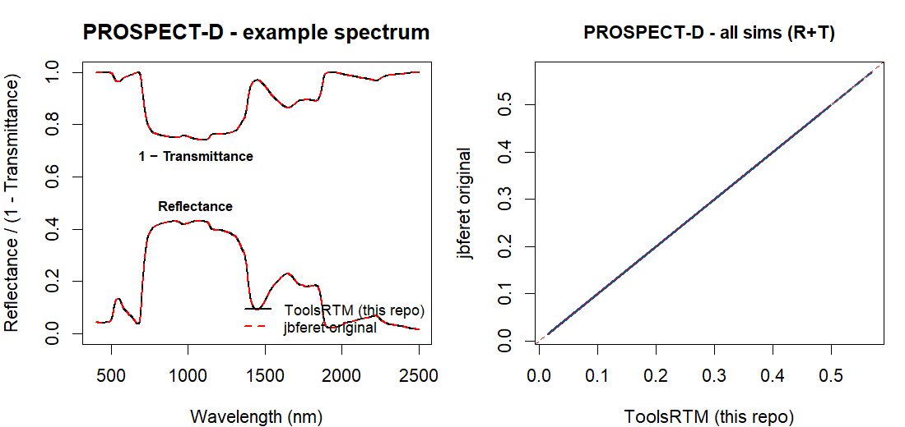
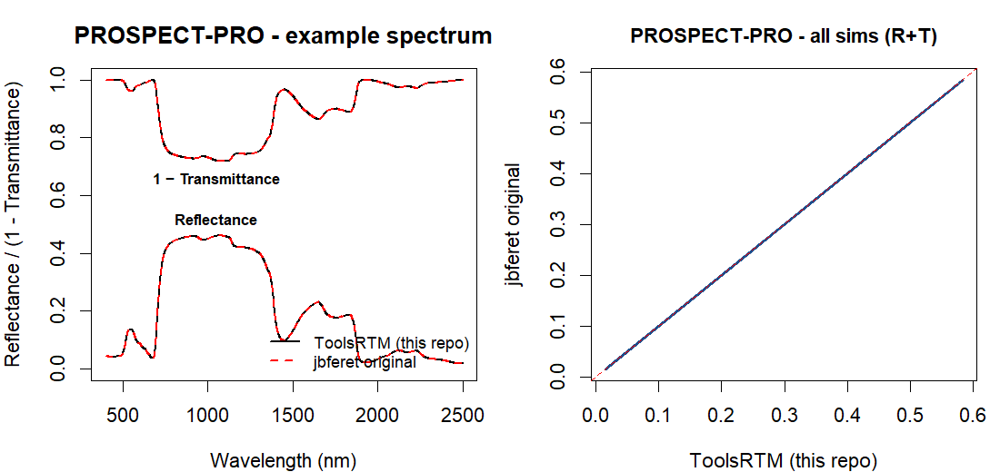
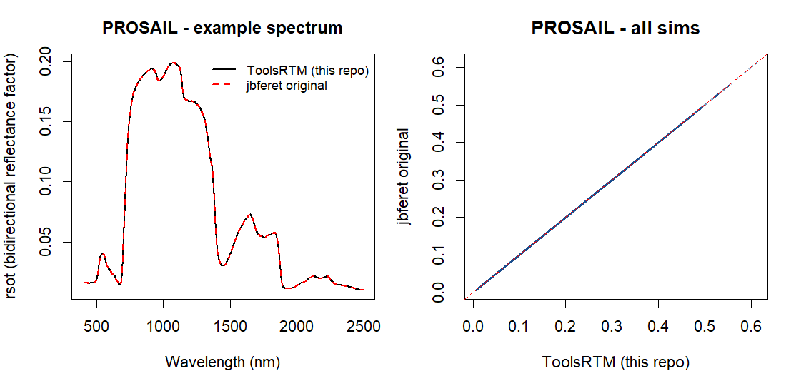
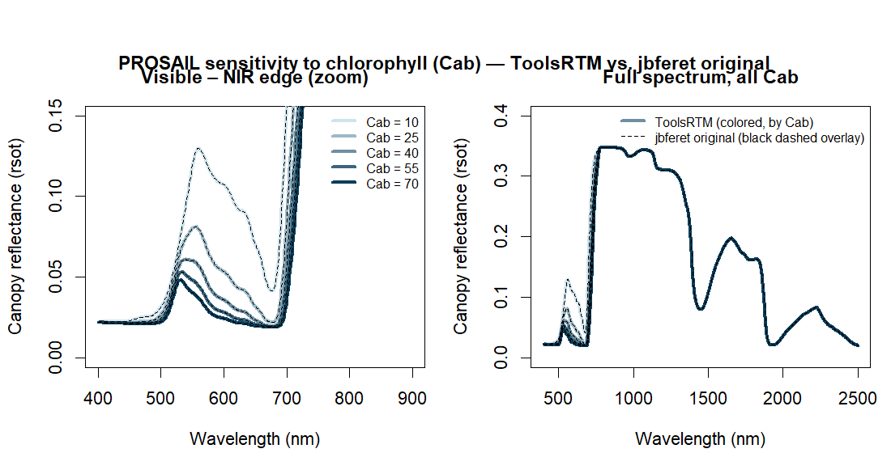

The R vs Python page checks that RTM-Suite's own two language implementations agree with each other. This page asks a different question: do RTM-Suite's R ports of PROSPECT-D, PROSPECT-PRO and PROSAIL (4SAIL) agree with Jean-Baptiste Féret's original reference R packages — prospect and prosail — that ToolsRTM's leaf and canopy models were originally ported from? 60 simulations, one shared randomly-sampled LUT (getLUT(inputsPROSAIL), seed 42), both packages run independently from the same inputs.
> source("compare_batch.R") # 60 simulations, shared LUT, seed 42
Valid sims -- D: 60 / 60 PRO: 60 / 60 Canopy: 60 / 60
PROSPECT-D reflectance n=126060 RMSE=8.0e-05 maxdiff=6.5e-04 R2=0.99999973
PROSPECT-PRO reflectance n=126060 RMSE=0.000e+00 maxdiff=0.000e+00 R2=1.00000000
PROSPECT-PRO transmittance n=126060 RMSE=0.000e+00 maxdiff=0.000e+00 R2=1.00000000
PROSAIL rsot (canopy) n=126060 RMSE=0.000e+00 maxdiff=0.000e+00 R2=1.00000000
One shared LUT, getLUT(inputs = ToolsRTM::inputsPROSAIL, nLUT = 60, setseed = 42) — every table above runs both packages from these same 60 rows. inputsPROSAIL allows wider nominal ranges for several parameters, but marks some of them "use default" instead of sampled; the ranges below are what the 60 rows actually realized, not the nominal spec.
| Parameter | Realized range (60 sims) | Units |
|---|---|---|
| Cab (chlorophyll) | 9.5 – 72.5 | µg/cm² |
| Car (carotenoid) | 1.5 – 14.6 | µg/cm² |
| Anth (anthocyanin) | 0.02 – 4.33 | µg/cm² |
| Cbrown (brown pigment) | 0.08 – 0.96 | arbitrary units |
| EWT (equivalent water thickness) | 0.0010 – 0.0349 | cm |
| Prot (protein) | 0.0014 – 0.0291 | g/cm² |
| CBC (carbon-based constituents) | 0.0003 – 0.0298 | g/cm² |
| N (leaf structure) | 1.50 – 2.46 | — |
| LIDFa (leaf angle distribution) | 30.5 – 69.9 | degree |
| LAI (leaf area index) | 2.02 – 4.95 | m²/m² |
| tto (view zenith angle) | 15.1 – 29.8 | degree |
| Held fixed (all 60 sims) | Value | Why |
|---|---|---|
| LMA (lumped dry matter) | 0 | PRO mode: dry matter comes from Prot+CBC instead |
| alpha (incidence solid angle) | 40° | standard leaf-optics convention |
| LIDFb / TypeLidf | 0 / 2 | ellipsoidal LIDF (type 2), only LIDFa varies |
| hspot (hotspot parameter) | 0 | default |
| tts (sun zenith angle) | 0° | default |
| psi (relative azimuth) | 0° | default |
prospectPROSPECT-DLeaf structure (N), chlorophyll, carotenoid, anthocyanin, brown pigment, water and lumped dry-matter (LMA) content — the classic PROSPECT-D parameterization, no protein/carbon split. ToolsRTM's prospect_DB() vs. jbferet's prospect() (with prot=cbc=0), same inputs, full 400–2500 nm reflectance and transmittance.

| Output | Valid sims | RMSE | Max abs diff | R² |
|---|---|---|---|---|
| Reflectance | 60/60 | 8.0 × 10-5 | 6.5 × 10-4 | 0.99999973 |
| Transmittance | 60/60 | 8.0 × 10-5 | 6.4 × 10-4 | 0.99999962 |
prospectPROSPECT-PROSame leaf model, but dry matter split into protein (Prot) and non-protein carbon-based constituents (CBC) instead of one lumped LMA term — ToolsRTM's prospect_PRO() vs. jbferet's prospect() (with lma=0, prot/cbc from the same LUT columns).

| Output | Valid sims | RMSE | Max abs diff | R² |
|---|---|---|---|---|
| Reflectance | 60/60 | 0.0 | 0.0 | 1.00000000 |
| Transmittance | 60/60 | 0.0 | 0.0 | 1.00000000 |
Exact machine-precision agreement across all 60 simulations.
prosailPROSAIL — PROSPECT-PRO + 4SAILThe full canopy chain: PROSPECT-PRO leaf optics feeding ToolsRTM's foursail() vs. jbferet's prosail() wrapper (which couples the same leaf model to its own fourSAIL()). Same LIDF, LAI, hotspot, sun/view geometry and a flat soil reflectance (0.15) on both sides; bi-directional reflectance factor (rsot) compared.

| Output | Valid sims | RMSE | Max abs diff | R² |
|---|---|---|---|---|
| rsot (bi-directional reflectance factor) | 60/60 | 0.0 | 0.0 | 1.00000000 |
Exact agreement across the full canopy chain, all 60 simulations.
ToolsRTM ships two separate coefficient tables, sourced independently rather than one derived from the other — dataSpec_PDB backs PROSPECT-D (and also bundles solar-irradiance and reference-soil spectra, used elsewhere), while dataSpec_PRO backs PROSPECT-PRO. Their parameter sets only partly overlap:
dataSpec_PDB column | What it holds |
|---|---|
wavelength, Refrac_leafm | Wavelength grid, leaf refractive index |
SC_chl, SC_car, SC_Anth, SC_Brwon | Chlorophyll, carotenoid, anthocyanin, brown-pigment coefficients |
SC_Cw, SC_Cm | Water and lumped dry-matter coefficients (PROSPECT-D style) |
direct_light, diffuse_light | Solar irradiance spectra (not a leaf-optics coefficient) |
dry_soil, wet_soil | Reference soil reflectance spectra (not a leaf-optics coefficient) |
dataSpec_PRO column | What it holds |
|---|---|
wave, RI_leafmaterial | Wavelength grid, leaf refractive index |
spA_Cab, spA_Car, spA_Atn, spA_Br | Chlorophyll, carotenoid, anthocyanin, brown-pigment coefficients |
spA_Cw | Water coefficient |
spA_Cm | Legacy lumped dry-matter coefficient (kept for reference, unused in PRO mode) |
spA_Protein, spA_nonPro | Split dry-matter coefficients (PROSPECT-PRO style: protein + carbon-based constituents) |
The pigment and refractive-index columns that both tables carry (refractive index, Cab, Car, Anth, Brown, EWT) agree to within ≈5×10-4 or better — consistent with two independently-exported historical tables, not a shared error. The dry-matter side isn't a like-for-like comparison: PROSPECT-D's single Cm and PROSPECT-PRO's split Protein/nonPro are two different published parameterizations of the same physical absorption, not expected to match wavelength-by-wavelength.
The tables above compare 60 random simulations, but it's easy to wonder whether agreement holds only near the specific values those draws happened to land on. This sweeps chlorophyll content (Cab = 10, 25, 40, 55, 70 μg/cm²) through PROSAIL end to end, everything else held fixed, ToolsRTM vs. jbferet's original at every value.

Each Cab value gets its own color for both the solid (ToolsRTM) and dashed (jbferet) line, so a true per-Cab mismatch would show as a visible gap in its own color — there isn't one anywhere, including at the chlorophyll absorption peak (≈550–680 nm) where Cab's effect is strongest and any porting drift would show up most clearly.
jbferet's original packages aren't on CRAN. prospect is installed for real (devtools::install_local()) since its ::-qualified internal calls need it on the search path; prosail is only source()'d directly — its forward-simulation functions (prosail(), fourSAIL()) don't touch the package's heavier inversion/hybrid-ML dependencies (raster, terra, sf, mlr...), so a full install of prosail isn't necessary just to compare simulations.
# Shell: get the sourcegit clone https://github.com/jbferet/prospect.gitgit clone https://github.com/jbferet/prosail.git
\# R: install prospect for real (needed so its internal `prospect::` calls resolve)
install.packages("NlcOptim") # only missing dependency; everything else Imports is on CRAN
devtools::install_local("prospect", dependencies = FALSE, upgrade = "never")
library(ToolsRTM)
library(prospect)
\# source prosail's R/ files directly -- no install needed for forward simulation
prosail_dir <- "prosail" # path to the cloned repo
for (f in list.files(file.path(prosail_dir, "R"), pattern = "\\.R$", full.names = TRUE))
source(f)
spec <- prospect::spec_prospect_full_range
lam <- spec$lambda
\# one shared, randomly-sampled LUT -- same inputs feed both packages
LUT <- as.data.frame(getLUT(inputs = ToolsRTM::inputsPROSAIL, nLUT = 60, setseed = 42))
rsoil <- rep(0.15, length(lam))
row <- LUT[1, ] # any row -- this repeats per simulation in the real comparison
\# ---- PROSPECT-PRO: ToolsRTM vs. jbferet's prospect() ----
rtm_leaf <- prospect_PRO(N = row$N, Cab = row$Cab, Car = row$Car, Anth = row$Anth,
Cbrown = row$Cbrown, EWT = row$EWT, LMA = 0,
alpha = row$alpha, Prot = row$Prot, CBC = row$CBC)
jb_leaf <- prospect::prospect(spec_prospect = spec, n_struct = row$N, chl = row$Cab,
car = row$Car, ant = row$Anth, brown = row$Cbrown, ewt = row$EWT,
lma = 0, prot = row$Prot, cbc = row$CBC, alpha = row$alpha)
cat("Reflectance R2:", 1 - sum((rtm_leaf$refl - jb_leaf$reflectance)^2) /
sum((rtm_leaf$refl - mean(rtm_leaf$refl))^2), "\n")
\# ---- PROSAIL: ToolsRTM's foursail() vs. jbferet's prosail() wrapper ----
lut_row <- row; lut_row$LMA <- 0
rtm_canopy <- foursail(rsoil = rsoil, inputLUT = lut_row,
LeafModel = "PROSPECT-PRO", spectrum.all = TRUE)
input_prospect_jb <- data.frame(n_struct = row$N, chl = row$Cab, car = row$Car,
ant = row$Anth, brown = row$Cbrown, ewt = row$EWT, lma = 0,
prot = row$Prot, cbc = row$CBC)
jb_canopy <- prosail(spec_sensor = spec, input_prospect = input_prospect_jb,
alpha = row$alpha, type_lidf = 2, lidf_a = row$LIDFa,
lai = row$LAI, hotspot = row$hspot, tts = row$tts,
tto = row$tto, psi = row$psi, rsoil = rsoil, SAILversion = "4SAIL")
plot(lam, rtm_canopy$rsot, type = "l", xlab = "Wavelength (nm)", ylab = "rsot")
lines(lam, jb_canopy$rsot, col = "red", lty = 2) # ToolsRTM vs. jbferet original
Loop that over seq_len(nrow(LUT)) and accumulate rtm_*/jb_* into vectors to reproduce the full 60-simulation tables above, or slice by wavelength (lam >= 1300 & lam < 1450) to reproduce the per-wavelength SWIR breakdown.
See also the R Ecosystem section for direct links to prospect, prosail and biodivMapR, and the Contributors & Collaborators section for the collaboration with Jean-Baptiste Féret (UMR TETIS, INRAE).